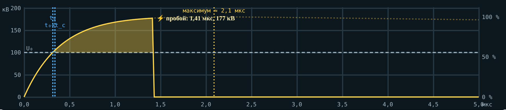

Техника высоких напряжений
Методическое пособие для студента
Стример, лидер, искровой разряд: как решать задачи
Справочные данные, алгоритм, разобранные примеры, задачи и реальные случаи · лекция 3
| Как работать с пособием. Просмотрите справочные данные и сводку формул. Повторите сами расчёты разобранных примеров. Решите задачи раздела 4 и сверьтесь с ответами в конце. Раздел 5 — реальные случаи: ответьте на вопросы письменно. Интерактив «Стример, лидер, искровой разряд» помогает проверить себя: вкладки 1–4 считают те же величины, вкладка 6 — ещё 10 задач. |
1. Справочные данные
| Величина | Значение |
|---|---|
| Константы Таунсенда для воздуха | A = 15 1/(см·мм рт. ст.), B = 365 В/(см·мм рт. ст.) |
| Критерий стримера | αxкр ≈ 18–20 (в расчётах — 20) |
| Поле устойчивости стримера при δ = 1 | +: 4,7 кВ/см; −: 11,7 кВ/см |
| Поле головки стримера | +: 120–160 кВ/см; −: 100–120 кВ/см |
| Скорость стримера | 105…4·106 м/с |
| Относительная плотность воздуха | δ ≈ e−H/8150 |
| Порог перехода стебля в лидер | ≈ 1500–2000 К |
| Температура канала лидера | 2000–3500 К |
| Скорость лабораторного лидера | ≈ 104 м/с (1–3 см/мкс) |
| Ступенчатый лидер молнии | ступени — десятки м, паузы 20–50 мкс, ≈ 2·105 м/с |
| Обратный удар молнии | ≈ 30 000 К, ≥ 10 атм |
| Учебная модель лидера | Es = 3,8 кВ/см, EL = 1,5 кВ/см, 3 см/мкс |
| Грозовой импульс | 1,2/50 мкс |
2. Сводка формул
| Что считаем | Формула | Замечание |
|---|---|---|
| Коэффициент ионизации | α = A·p·e−B·p/E | p в мм рт. ст., E в В/см |
| Критическая длина лавины | xкр = 20/α | меньше зазора — пробой стримерный |
| Длина стримерной зоны | Ls ≈ U/Es | резко неоднородное поле |
| Пробой острие — плоскость | Uпр ≈ Es·δ·d | d до ≈ 1 м |
| Поле у острия | Emax = 2U/(r·ln(4d/r)) | лекция 1 |
| Зажигание (модель) | Eз = 30δ(1 + 0,3/√(δr)), Uз = Eз·r·ln(4d/r)/2 | r в см; у «−» × 0,9 |
| Формула Галле | U50 = 3400·k/(1 + 8/d) | кВ, d в м, k = 1 стержень |
| Стримерная зона лидера | Ls = (U − EL·L)/Es | модель |
| Финальный скачок | L + Ls ≥ d | |
| Время разряда | tр = tс + tф | |
| Критерий площадей | ∫(u − U0)dt = D | прямоугольник: tф = D/(U − U0) |
3. Алгоритм решения и разобранные примеры
Определите, какой механизм работает: однородное поле и малый зазор — лавина и критерий стримера; острие и зазор до 1 м — стримеры; больше 1 м — лидер и формула Галле; импульс — время разряда.
Переведите единицы: E в кВ/см, d в см (для стримеров) или в м (для Галле).
Учтите полярность (Es+ или Es−) и высоту (δ).
Подставьте числа и проверьте порядок величины: сотни киловольт на метр — разумно, мегавольты на сантиметр — ошибка.
Пример 1. Где лавина станет стримером
Дано: воздух, 760 мм рт. ст., почти однородное поле E = 35 кВ/см, зазор 3 см.
α = 15·760·e−365·760/35000 = 4,12 1/см.
xкр = 20/α = 20/4,12 = 4,9 см.
| Ответ: xкр ≈ 4,9 см > 3 см: лавина дойдёт до анода раньше, чем станет стримером. |
Пример 2. Пробой острие — плоскость при двух полярностях
Дано: острие на расстоянии d = 40 см от заземлённой плоскости, δ = 1.
Острие «+»: Uпр ≈ Es+·d = 4,7·40 = 188 кВ.
Острие «−»: Uпр ≈ Es−·d = 11,7·40 = 468 кВ.
| Ответ: 188 и 468 кВ: при положительном острие в 2,5 раза меньше. |

Рис. 1. Проверка во вкладке 1: при 60 кВ и 20 см стримеры «+» дорастают лишь до 12,8 см = 60/4,7
Пример 3. Напряжение зажигания
Дано: острие r = 1 мм = 0,1 см, d = 20 см, δ = 1.
Eз = 30·(1 + 0,3/√0,1) = 58,5 кВ/см.
Uз = Eз·r·ln(4d/r)/2 = 58,5·0,1·ln 800/2 = 19,5 кВ.
У отрицательного острия на 10 % меньше: 17,6 кВ.
| Ответ: ≈ 19,5 кВ («+») и 17,6 кВ («−») — в 5–10 раз меньше пробивного: долгое время горит только корона. |
Пример 4. Поправка на высоту
Дано: промежуток 40 см, острие «+», высота 1000 м.
δ = e−1000/8150 = 0,885.
Uпр ≈ 4,7·0,885·40 = 166 кВ.
| Ответ: ≈ 166 кВ — на 12 % меньше, чем на уровне моря. |
Пример 5. Длинный промежуток по Галле
Дано: стержень — плоскость, d = 5 м, положительный коммутационный импульс.
U50 = 3400/(1 + 8/5) = 1308 кВ.
Средняя напряжённость 262 кВ/м; «только стримеры» дали бы 470·5 = 2350 кВ.
| Ответ: U50 ≈ 1308 кВ. |
Пример 6. Какой длины нужен лидер
Дано: d = 4 м, напряжение 1140 кВ (считаем неизменным), Es = 3,8 кВ/см, EL = 1,5 кВ/см, скорость лидера 3 см/мкс.
Одни стримеры: Ls = 1140/380 = 3,0 м < 4 м — не хватает.
Условие скачка: L + (1140 − 150·L)/380 = 4 → L·(1 − 150/380) = 4 − 3,0 → L = 1,0/0,605 = 1,65 м.
Время роста лидера: 165 см / 3 см/мкс = 55 мкс.
| Ответ: лидер ≈ 1,65 м, ≈ 55 мкс от старта лидера. |
 ещё растёт и равно ≈ 1085 кВ, поэтому лидер длиннее — ≈ 1,9 м. Проверка: 1,92 + (1085 − 150·1,92)/380 ≈ 4,0 м")
Рис. 2. Во вкладке 3 напряжение импульса к моменту пробоя (≈ 205 мкс) ещё растёт и равно ≈ 1085 кВ, поэтому лидер длиннее — ≈ 1,9 м. Проверка: 1,92 + (1085 − 150·1,92)/380 ≈ 4,0 м
Пример 7. Время разряда по критерию площадей
Дано: U0 = 100 кВ; прямоугольное напряжение 130 кВ; среднее tс = 0,4 мкс. Сравнить стержень (D = 60 кВ·мкс) и шаровой промежуток (D = 2 кВ·мкс).
Стержень: tф = 60/(130 − 100) = 2,0 мкс, tр = 2,4 мкс.
Шары: tф = 2/30 = 0,067 мкс, tр ≈ 0,47 мкс — почти всё время уходит на ожидание электрона.
| Ответ: 2,4 мкс и 0,47 мкс; у шаров разброс задаёт tс, отсюда облучение. |

Рис. 3. Во вкладке 4 импульс не прямоугольный, но идея та же: пробой, когда жёлтая площадь над U₀ достигла D
4. Задачи для самостоятельной работы
Почти однородное поле 45 кВ/см в воздухе при 760 мм рт. ст. Найдите критическую длину лавины xкр (αxкр = 20), мм.
То же при 60 кВ/см, мм.
Острие «+» в 50 см от заземлённой плоскости, δ = 1. Оцените пробивное напряжение, кВ.
Острие «−» в 15 см от плоскости, δ = 1. Пробивное напряжение, кВ.
Высота 3000 м, острие «+», d = 30 см. Пробивное напряжение, кВ.
Острие r = 0,5 мм, d = 30 см, δ = 1, полярность «+». Напряжение зажигания по модели, кВ.
Наибольшая напряжённость у острия r = 1 мм при U = 50 кВ и d = 20 см, кВ/см.
U50 стержень — плоскость при d = 2 м по Галле, кВ.
При какой длине промежутка стержень — плоскость U50 по Галле равно 1500 кВ, м?
Облако на высоте 5 км, средняя скорость ступенчатого лидера 2·105 м/с. Время до земли, мс.
U0 = 100 кВ, D = 60 кВ·мкс, прямоугольное напряжение 160 кВ. Время формирования, мкс.
Лидер растёт со скоростью 3 см/мкс. За какое время он пройдёт 1,5 м, мкс?
5. Реальные случаи
Прочитайте случай и ответьте письменно на вопрос. Эти же случаи с вариантами ответа — во вкладке 5 интерактива.
5.1. Италия, 28 сентября 2003: дуга на дерево
Около 03:00 линия 400 кВ Mettlen–Lavorgo (Лукманьер), по которой энергия шла из Швейцарии в Италию, отключилась: в пролёте возникла дуга на дерево. Нагрузка перешла на соседние линии, через ≈ 20 минут они тоже отключились, Италия отделилась от энергосистемы Европы. Без света остались около 56 млн человек, на полуострове — до 12 часов.
| Вопрос. Почему промежуток «провод — дерево» пробивается при меньшем напряжении, чем однородный промежуток той же длины? |
Источник: Википедия, «2003 Italy blackout»; итоговый отчёт UCTE, апрель 2004
5.2. США и Канада, 14 августа 2003: деревья под линиями 345 кВ
В 14:02 отключилась линия Stuart–Atlanta: деревья высотой 9–11 м под проводом на высоте ≈ 12 м. По той же причине отключились Star–South Canton (14:27, окончательно 15:42), Harding–Chamberlin (15:05), Hanna–Juniper (15:32) — при нагрузке в пределах нормального режима. Каскад оставил без света около 50 млн человек.
| Вопрос. Почему линии отключились при нагрузке в пределах нормы? |
Источник: NERC, отчёт о деревьях в аварии 14 августа 2003
5.3. Сколько нужно до дерева: формула Галле в стандарте
Для линии 345 кВ (наибольшее 362 кВ, кратность коммутационных перенапряжений 2,0) NERC получил минимальный зазор 3,53 фута (≈ 1,08 м) на высоте 3000 футов, а повторный расчёт PNNL по Галле с теми же допущениями — 6,1 фута (≈ 1,86 м).
| Вопрос. Почему расчётный случай для зазора до дерева — положительный коммутационный импульс? |
Источник: PNNL-21220, 2012
5.4. Лидер в промежутке 1 м: ударная волна
Промежуток стержень — плоскость 1 м, положительный импульс 404 кВ с фронтом 250 мкс. Интерферометр Маха — Цендера: лидер удлинялся не медленнее 1,3·104 м/с, от канала расходилась ударная волна со скоростью ≈ 319 м/с.
| Вопрос. Почему от канала лидера идёт ударная волна, а от стримеров — нет? |
Источник: «Shock Wave in Leader Discharge Observed Using Mach-Zehnder Interferometry», arXiv:1806.02788
5.5. Ступенчатый лидер молнии
Высокоскоростная съёмка: ступени по десятки метров, паузы 20–50 мкс, средняя скорость ≈ 2·105 м/с, ток ступени ≥ 1 кА. Обратный удар раскаляет канал до ≈ 30 000 К при давлении ≥ 10 атм.
| Вопрос. Почему ступенчатый лидер молнии в среднем быстрее лабораторного? |
Источник: Rakov V. A., Uman M. A. Lightning: Physics and Effects, разд. 4.7–4.12
6. Ответы к задачам раздела 4
| № | Ответ |
|---|---|
| 1 | 8,3 мм |
| 2 | 1,79 мм |
| 3 | 235 кВ |
| 4 | 175,5 кВ |
| 5 | 97,6 кВ |
| 6 | 13,7 кВ |
| 7 | 150 кВ/см |
| 8 | 680 кВ |
| 9 | 6,32 м |
| 10 | 25 мс |
| 11 | 1,0 мкс |
| 12 | 50 мкс |
7. Источники
Важов В. Ф., Лавринович В. А. Техника высоких напряжений: учебник. — Томск: ТПУ, 2014. — Разд. 1.1–1.2.
On propagation of positive and negative streamers in air in uniform electric fields. — arXiv:2305.09560.
Briels T. M. P. et al. Positive and negative streamers in ambient air: measuring diameter, velocity and dissipated energy. — arXiv:0805.1376, 2008.
Gallet G., Leroy G., Lacey R., Kromer I. General expression for positive switching impulse strength valid up to extra long air gaps. — IEEE Trans. PAS, 1975.
Applicability of the Gallet Equation to the Vegetation Clearances of NERC Reliability Standard FAC-003-2. — PNNL-21220, 2012.
Rakov V. A., Uman M. A. Lightning: Physics and Effects. — Cambridge University Press, 2003. — Разд. 4.
NERC. Final report on the August 14, 2003 blackout: vegetation (trees) investigation.
2003 Italy blackout. — Wikipedia; UCTE. Final Report of the Investigation Committee on the 28 September 2003 Blackout in Italy, 2004.